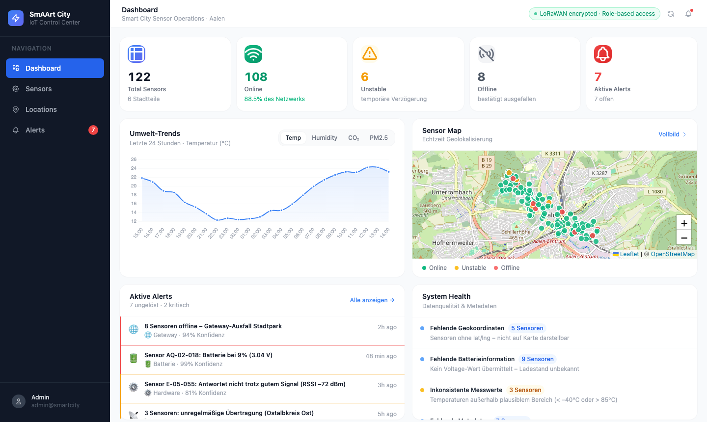
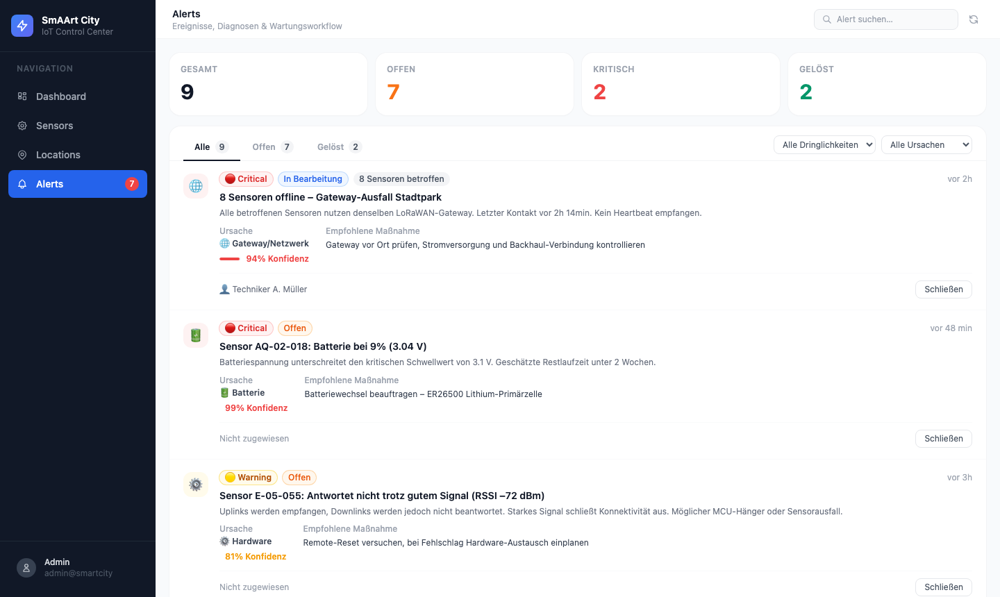

Intelligent IoT operations for modern city infrastructure — real-time monitoring, predictive diagnostics & maintenance workflows. Intelligenter IoT-Betrieb für moderne Stadtinfrastruktur — Echtzeit-Monitoring, prädiktive Diagnostik & Wartungsworkflows.
The ChallengeDie Herausforderung
Battery blind spotsBatterie-Blindstellen
No tracking → sensors die unexpectedly. Standard monitoring misses LoRaWAN's multi-year lifespan.Kein Tracking → Sensoren fallen unerwartet aus. Standard-Monitoring ignoriert die jahrelange LoRaWAN-Laufzeit.
False alarmsFehlalarme
One missed packet ≠ offline sensor. Teams waste hours chasing non-issues without context.Ein verlorenes Paket ≠ ausgefallener Sensor. Ohne Kontext verschwenden Teams Stunden mit Nicht-Problemen.
No workflowKein Workflow
Issues are noticed — but never assigned, tracked or resolved. Knowledge lives in inboxes.Probleme werden bemerkt — aber nie zugewiesen, verfolgt oder gelöst. Wissen lebt in Posteingängen.
Live PlatformLive-Plattform

What makes it smartWas es intelligent macht
Battery IntelligenceBatterie-Intelligenz
Voltage → % conversion with lifetime estimation in months/years. Thresholds: >30% healthy · 15–30% plan · <15% urgent.Spannung → % mit Lebensdauerabschätzung. Schwellen: >30% gesund · 15–30% planen · <15% dringend.
Root Cause AIUrsachenanalyse
Every failure classified: Battery · Connectivity · Gateway · Hardware · Software — each with a confidence score.Jeder Ausfall klassifiziert: Batterie · Konnektivität · Gateway · Hardware · Software — mit Konfidenzwert.
False Positive PreventionFalschalarme verhindern
Three states: Online · Unstable (missed packets, not yet critical) · Offline (confirmed, root cause triggered).Drei Zustände: Online · Unstable (verpasste Pakete) · Offline (bestätigt, Ursache ausgelöst).

Technical ArchitectureTechnische Architektur
LoRaWAN
Low-power, long-range via The Things IndustriesEnergiesparend, Langstrecke via TTI
Python / Flask
REST API + SQLAlchemy + SQLiteREST-API + SQLAlchemy + SQLite
Vanilla JS
Zero-dependency, no build stepKeine Abhängigkeiten, kein Build
Leaflet + Chart.js
City maps & trend chartsStadtkarten & Trendcharts
Sensor → LoRaWAN Gateway → The Things Industries → MQTT → Python Ingestion → SQLite → REST API → Dashboard Sensor → LoRaWAN-Gateway → The Things Industries → MQTT → Python-Ingest → SQLite → REST-API → Dashboard
What's NextNächste Schritte
Architecture supports hundreds of sensors across multiple cities — today: Aalen, 122 sensors, 6 districts.Die Architektur trägt hunderte Sensoren in mehreren Städten — heute: Aalen, 122 Sensoren, 6 Stadtteile.
v2.0
Predictive MLPrädiktives ML
Predict failures 2 weeks aheadAusfälle 2 Wochen im Voraus vorhersagen
v2.5
Mobile AppMobile App
Technician app with QR code scanningTechniker-App mit QR-Code-Scan
v3.0
Multi-CityMulti-Stadt
White-label for Baden-WürttembergWhite-Label für Baden-Württemberg